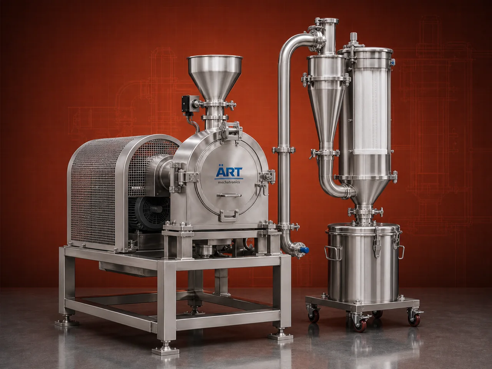

Micro Pulverizer Machine (Ultra Fine Grinding & Powder Processing System)
A Micro Pulverizer Machine is an advanced high-speed grinding system designed for ultra-fine pulverization of materials into micron-level powder using the principle of impact and attrition.

About the Micro Pulverizer Machine
It is widely used for precision grinding of spices, food products, chemicals, pharmaceuticals, minerals, herbs, and fine powders, where consistent particle size and high fineness are critical.
Compared to standard pulverizers, micro pulverizers offer higher efficiency, finer output, and better control over particle size, making them ideal for high-end industrial applications.
ART Mechatronics provides high-performance micro pulverizers, engineered for ultra-fine grinding, high output, and superior powder quality.
One machine, many names
Buyers search for this equipment under many terms — we manufacture all of them:
Working Principle of Micro Pulverizer
Material is fed into the machine through:
Inside the pulverizer:
Finished powder is collected using:
Types of Micro Pulverizers
Industries Using Micro Pulverizer
🌶️ Food & Spice Industry
- Spices (chili, turmeric, cumin)
- Flour and fine powders
💊 Pharma & Herbal Industry
- Medicines
- Herbal powders
⚗️ Chemical Industry
- Chemicals
- Pigments
🏗️ Mineral Industry
- Limestone
- Minerals
🍃 Agro Industry
- Feed
- Organic powders
♻️ Recycling Industry
- Powder materials
Features & Advantages
✔ Ultra-fine grinding capability (micron level) ✔ High-speed and efficient operation ✔ Uniform particle size distribution ✔ Suitable for wide range of materials ✔ Compact and robust design ✔ Low maintenance and easy operation ✔ Energy-efficient performance
Technical Highlights
- Capacity: Custom (kg/hr to tons/hr)
- Grinding Type: Impact + Attrition
- Construction: Mild Steel / Stainless Steel
- Particle Size: Adjustable (fine to ultra-fine)
- Drive: Electric motor
- Dust Control: Cyclone + Dust Collector
Turnkey Micro Pulverizing Solutions
ART Mechatronics offers:
- Complete grinding system design
- Micro pulverizer machine supply
- Cyclone and dust collection system integration
- Installation & commissioning
- After-sales service & AMC
Why Choose Art Mechatronics
- Expertise in fine and ultra-fine grinding systems
- Customized solutions for high-precision industries
- High-efficiency and durable machines
- Multi-industry application capability
- Proven performance and reliability
Applications
- Food Processing Units
- Spice Grinding Plants
- Pharma Manufacturing Units
- Chemical Processing Plants
- Mineral Grinding Units
Related Size Reduction & Grinding machines
Get pricing & specs for the Micro Pulverizer Machine
Share the product, target capacity, current process and plant location. These details help our engineers discuss the right machine or line configuration.
One partner, from design to start-up
ART Mechatronics designs, manufactures, installs and commissions your Micro Pulverizer Machine solution with regional presence in India, UAE and Thailand.